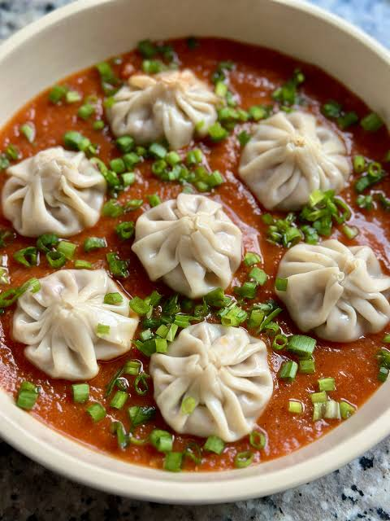

Homemade Chicken Momo Recipe

Ingredients
- 2 cups all-purpose flour
- 250 grams minced chicken
- 1 finely chopped onion
- 2 tablespoons chopped coriander
- 1 tablespoon ginger and garlic paste
- Salt and pepper as required
- 1 tablespoon oil
- Water as needed
Preparation Method
- Take flour in a bowl and add water slowly.
- Knead the flour to make a soft dough.
- In another bowl, mix minced chicken, onion, coriander, ginger-garlic paste, salt, pepper and oil.
- Make small balls from the dough and roll them into thin circles.
- Place a spoonful of chicken filling in the centre of each circle.
- Fold and shape the momos carefully.
- Place the momos in a steamer and steam for about 12–15 minutes, until fully cooked.
- Serve hot with tomato achar.